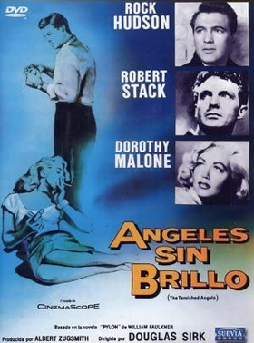
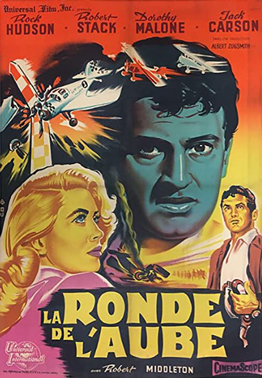
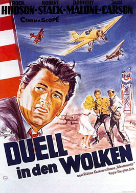

The Tarnished Angels
SYNOPSIS
Disillusioned World War I flying ace Roger Shumann (Robert Stack) spends his days during the Great Depression making appearances as a barnstorming pilot at rural airshows with his parachutist wife LaVerne (Dorothy Malone), worshipful son Jack (Chris Olsen) and mechanic Jiggs (Jack Carson) in tow. New Orleans reporter Burke Devlin (Rock Hudson) is intrigued by the gypsy-like lifestyle of the former war hero, but is dismayed by his cavalier treatment of his family and soon finds himself attracted to the neglected LaVerne.
Meanwhile, Roger barters with aging business magnate Matt Ord (Robert Middleton) for a plane in exchange for a few hours with his wife. Tragedy ensues when Jiggs' anger about his employer's refusal to face family responsibilities causes him to make a rash and fatal decision. He manages, with some difficulty, to get Shumann's aircraft to start, but the plane crashes and Shumann is killed. After rejecting and then reconciling with Devlin, LaVerne returns to Iowa with Jack.
Universal-International reunited director Douglas Sirk with Robert Stack, Dorothy Malone and Rock Hudson for The Tarnished Angels - a film about early aviators based on William Faulkner's novel Pylon- with whom he had collaborated on Written on the Wind the previous year. In contrast to this film, in the earlier film Stack and Malone played brother and sister and Malone's character was infatuated with Hudson's character. Sirk chose to shoot Angels in black-and-white to help capture the despondent mood of the era in which it is set. William Faulkner considered this film to be the best screen adaptation of his work.
The Tarnished Angels premiered in London in November 1957 and had its first American booking on Christmas Day 1957 in Charlotte, North Carolina, before going into general release.


